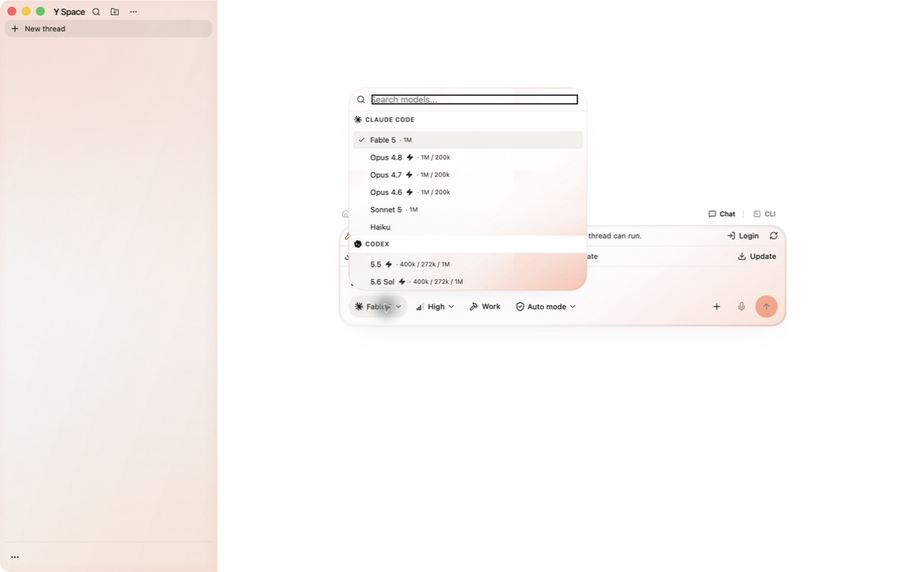
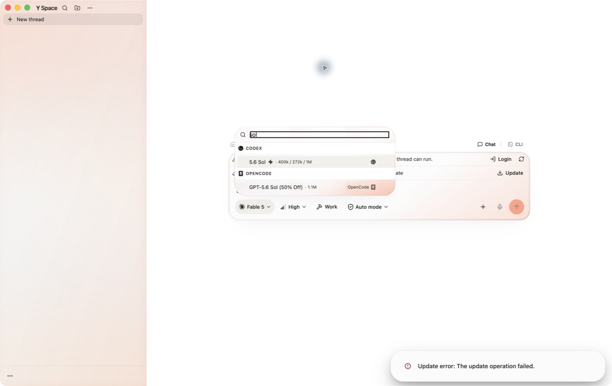
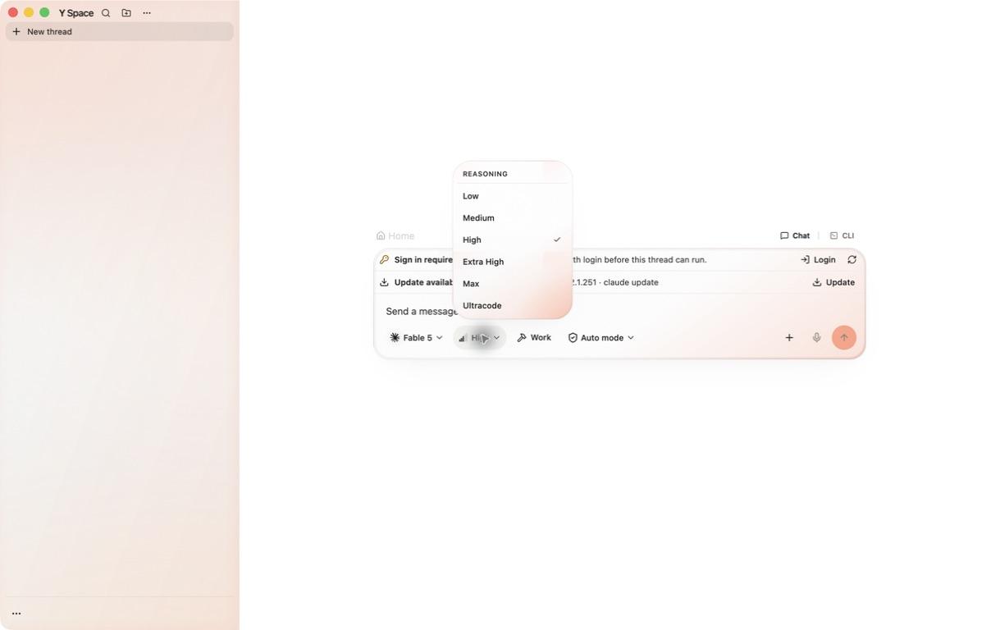
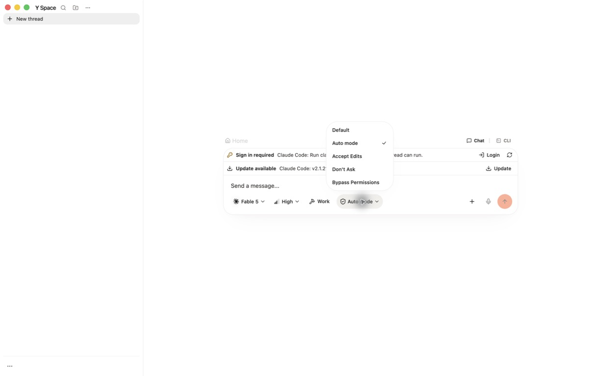
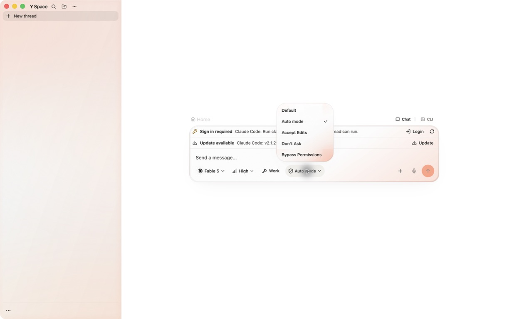

Outcome
PASS
All three popup-frost E2E cases and the full automated suite passed.
The model picker and shared desktop menus no longer stop at transparency. The shipped renderer preserves a native Electron-compatible 56px backdrop blur, richer light diffusion, an optical rim and lens, and a complete opaque accessibility fallback.
The source stylesheet declared blur, but the packaged model search displayed a transparent sheet whose covered labels and edges stayed sharp.
Tailwind 4.3.2’s Lightning CSS optimizer removed the standard
backdrop-filter and retained only -webkit-backdrop-filter.
Electron 43 does not expose that alias, so the computed packaged style became
none.
Every desktop ResponsiveMenuSurface receives one
poracode-frosted-popover root, covering model, effort, permission, project,
branch, and related menus.
blur(56px) saturate(195%) contrast(1.03), a valid three-bloom color field,
fine grain, a specular pass, optical rim, lens, and sharp dialog content.
Tailwind’s faulty optimizer is disabled for this renderer and Vite/esbuild performs CSS minification while preserving both standard and prefixed declarations.






941 files · 11,131 tests
6 files and 86 tests skipped; 112.79 seconds on Node 26.8.1.
2 files · 9 tests
Covers material strength, valid color field, optics, fallback, and production CSS preservation.
All green
Typecheck, standard and type-aware lint, formatting, renderer production build, and diff integrity.
/private/tmp/y-space-popup-frost-reviewed-20260830-1414/mac-arm64/Y Space.app
Unsigned ad-hoc ARM64 build; codesign --verify --deep --strict passed.
PID 15340 remained open across search, scroll, favorite, dismissal, other-menu, and
Reduce Transparency cases with --use-mock-keychain.
Normal release credential behavior was not weakened; the flag belongs only to the persistent QA launch.
One backdrop filter exists on each open popup root. Closing the menu unmounts that compositor surface. There are no filters on individual rows, model results, global tabs, Browser guests, document content, or page hosts.
Renderer styling, the shared desktop menu class boundary, the production CSS pipeline, focused tests, durable repository guidance, and QA evidence only. No agent runtime, Browser-control, or Pipedream authority path changed in this revision.
y-space-popup-frost (HEAD contains this report).fork/y-space-frosted-glass at
c95bb6589305cfd2a42622c8f3d04ed9924d4bd5.
implementation assets/qa-e2e-tests.json.